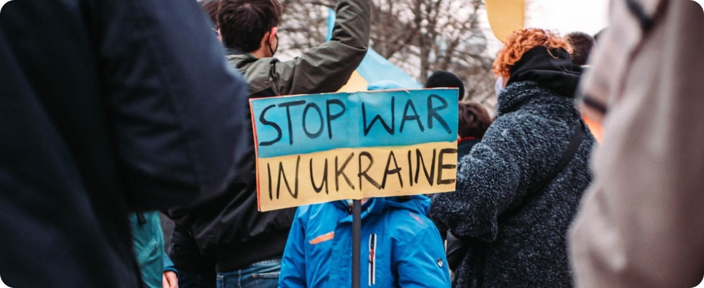

12.09.23
|~ 20 хв.
Психосоматика та здоров’я
Останнім часом набирає популярності такий напрямок як психосоматика. А також все частіше з’являється запит на психотерапію, спрямовану
Читати далі
До війни неможливо підготуватись. Навіть досвідченим військовим буває складно опанувати себе. Наша психіка була просто не готова до такого перебігу подій, саме тому зараз ми вкрай вразливі до різного ступеня почуттів.
Які емоції можуть виникати та чому не варто їх боятися. Які є стадії проживання війни, як підтримати психіку, — розповідають психологи HoldYou.
Коли у житті трапляється щось вкрай неочікуване та жахливе, виникають паніка та шоковий стан, вчинки стають автоматичними, спрямованими на виживання. Людина втрачає здатність до планування, всі майбутні плани обмежуються кількома годинами.
Коли шок поступово згасає, повертаються базові відчуття та емоції. Пам’ятаєте, як у перші години та дні протистояння ворогу ми відчували піднесення та ейфорію? Тоді ми ще мали для цього достатньо психічного ресурсу. Проте цей стан вимагає від організму багато енергії, яку ми зараз неспроможні генерувати. На зміну ейфорії приходять паніка, агресія, тривога, зневіра, відчай і депресія. Це базові емоції. Вони можуть трансформуватися та змінюватися залежно від психологічного стану людини.
Що цікаво, люди з підвищеною тривожністю та панічними атаками зараз демонструють неабияку внутрішню стійкість і спокій Це пов’язано з тим, що вони весь час знаходились в очікуванні чогось поганого, жили в стані регулярного стресу і страху. І коли це погане стало реальністю, вони заспокоїлись. Так реагує тіло та мозок на ті найстрашніші сценарії, які люди прокручували в голові, до яких себе готували.
Крива емоцій під час війни виглядає так: оптимізм, збудження, ейфорія, тривога, заперечення, страх, депресія, паніка, відчай, віра, надія, оптимізм. І так по колу.
Американська психологиня Елізабет Рос має власну популярну теорію прийняття життєвих змін: заперечення, злість, торг, депресія, прийняття. Розкажемо про кожну стадію детальніше.
Заперечення — цілком нормальна захисна реакція психіки. У цьому стані люди часто бувають забудькуватими, дезорієнтованими, дезорганізованими.
Злість, агресія — наслідок усвідомлення змін. Ви можете відчувати несправедливість, сильну ненависть, гнів, будь-які інші руйнівні емоції. Ймовірно, ви шукатимете винних, намагатиметесь звинуватити інших у всьому, що відбувається. Оскільки ви не маєте прямого впливу на відповідальних за цю війну людей, то виміщатимете злість на всіх, хто не підтримуватиме ваші погляди. Перш ніж це зробити, зрозумійте: люди важливіші за ідеї.
Злість, агресія — наслідок усвідомлення змін. Ви можете відчувати несправедливість, сильну ненависть, гнів, будь-які інші руйнівні емоції. Ймовірно, ви шукатимете винних, намагатиметесь звинуватити інших у всьому, що відбувається. Оскільки ви не маєте прямого впливу на відповідальних за цю війну людей, то виміщатимете злість на всіх, хто не підтримуватиме ваші погляди. Перш ніж це зробити, зрозумійте: люди важливіші за ідеї.

Торг – спроба відкласти прийняття рішення стосовно життя у новій реальності. Основні ознаки:
Якщо ви відчуваєте страх, паніку, тривожність або просто потребуєте підтримки, наша платформа HoldYou пропонує безкоштовні консультації психолога.

Магістр психології.
Сертифікований арт-терапевт, травмотерапевт та спеціаліст в техніці «Rewind Technique». З 2022 року Член Української асоціації психологів України (НАП).
Закінчила навчання в гештальт підході (1 ступінь) та є Членом Національної асоціації гештальт терапевтів України. Проводить індивідуальні консультації онлайн з дорослими з 2020 року.
Останнім часом набирає популярності такий напрямок як психосоматика. А також все частіше з’являється запит на психотерапію, спрямовану
Читати далі
Сьогодні розберемося ,яка різниця між психологом, психотерапевтом, хто є хто,та хто чим займається.Психолог, психотерапевт, психі
Читати далі
Останнім часом набирає популярності такий напрямок як психосоматика. А також все частіше з’являється запит на психотерапію, спрямовану
Читати далі